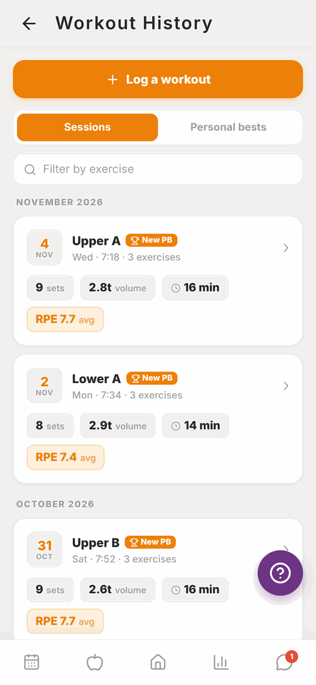
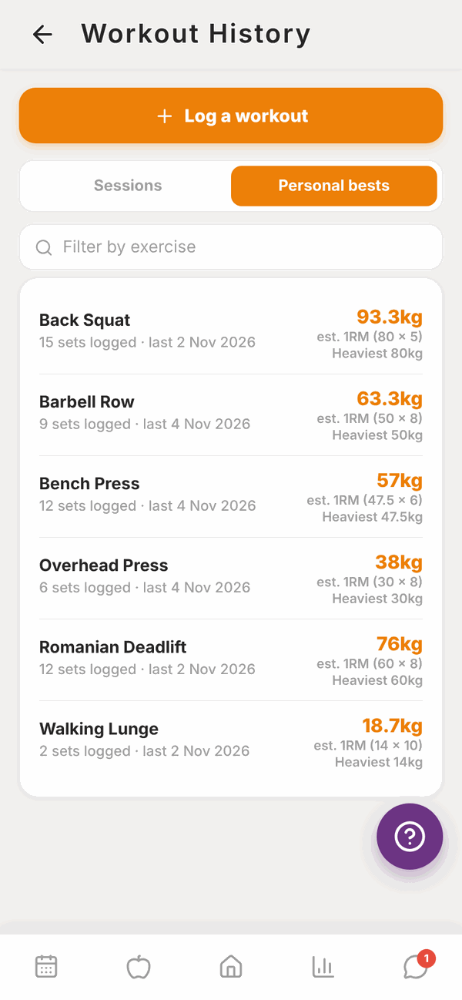
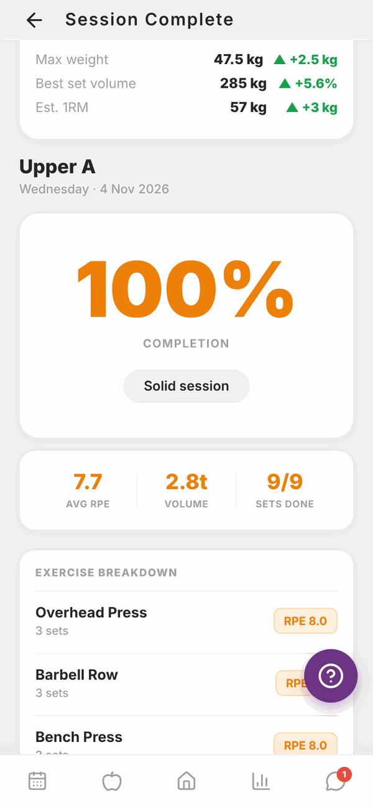
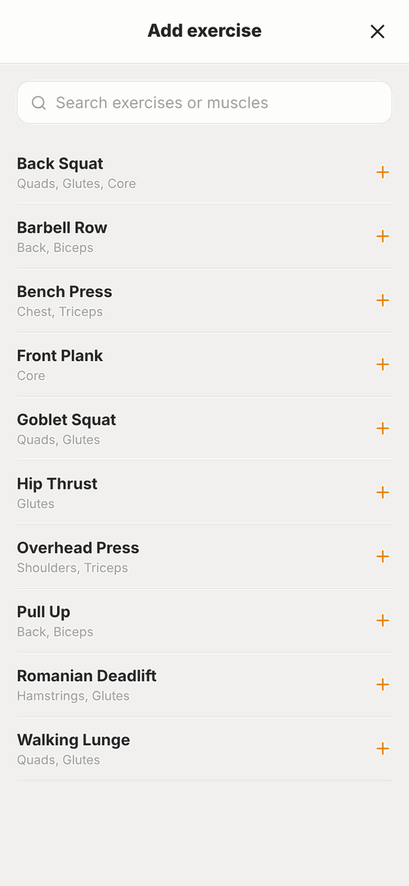

Totality for clients
Workout history and personal bests
See every workout you've logged, your personal bests, and log a workout that isn't in your programme.
Every workout you finish is saved in Workout History. On Home, scroll to MORE and tap Workout History.
Your sessions#

Workouts are grouped by month, newest first. Each one shows:
- The date and the session name, for example "Upper A".
- How many exercises, sets and the total volume (weight x reps added up).
- How long it took, when Totality can work that out.
- Your average RPE.
- A New PB badge if you set a personal best in it.
Tap a workout to open it and see every set as weight x reps, with RPE. Exercises where you set a PB show a small PB badge.
To find a particular exercise, type it into Filter by exercise. Only workouts with that exercise show.
Personal bests#
Tap Personal bests at the top.

For each exercise you see:
- Your best estimated 1RM (the most you could probably lift for one rep), and the set it came from, for example "est. 1RM (80 x 5)".
- Your Heaviest weight.
- How many sets you've logged and when you last did it.
The filter box works here too.
Session summary#
Straight after a workout, Totality shows your Session Complete summary. You can see it again from Home (View summary on today's workout once it's done) or the Calendar (Done. View summary).

Log a workout that isn't in your programme#
Trained on your own? Log it here so your trainer sees it.
- In Workout History, tap Log a workout.
- Tap Add exercise, then search for the exercise (by name or muscle) and tap it.
- Fill in Weight, Reps and RPE (RPE is optional) for the first set.
- Tap Add set for each extra set.
- Add more exercises the same way.
- Tap Save workout. You'll see "Workout saved" with the number of sets.

Each set needs a weight or reps. Sets left completely blank aren't saved.
Questions#
My workout isn't in my history.
Only workouts you finished with Finish & Save Session ✓ are saved. If you closed the workout before finishing, open it again: your sets are still there, so you can finish it.
What is volume?
Weight multiplied by reps, added up for every set. 3 sets of 5 reps at 80 kg is 1,200 kg of volume.
How is my 1RM worked out?
It's an estimate from your best set using a standard formula (Epley). You don't have to test a real one-rep max.
Why isn't a lift counted as a PB?
A PB only counts when you beat an earlier log of the same exercise. The first time you do an exercise is never a PB.
Can I edit or delete a past workout?
Not from the client app. Message your trainer if something was logged wrong.
It says it's only showing my most recent sets.
History shows your latest 2,000 sets. Older workouts and PBs from before then aren't included in the list.